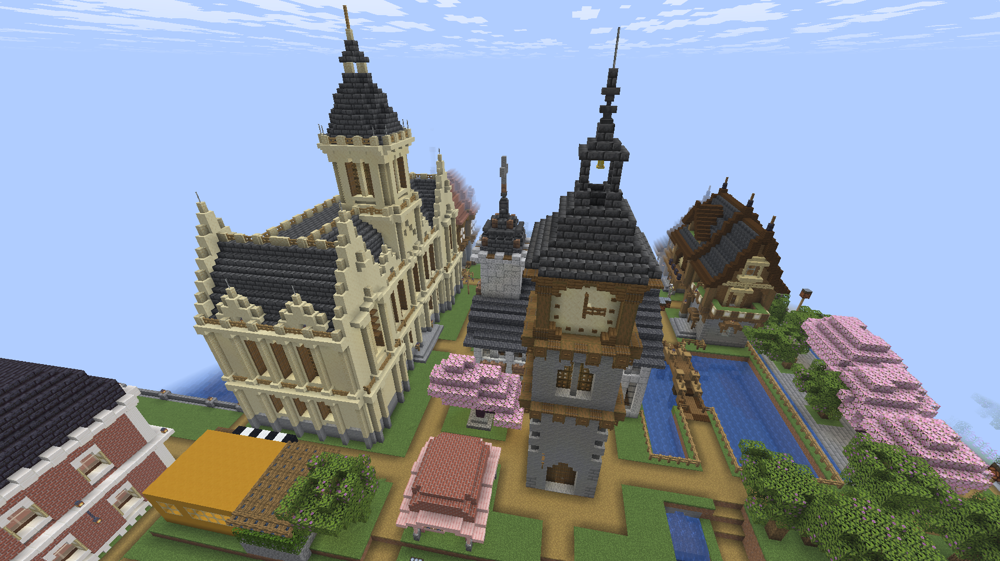
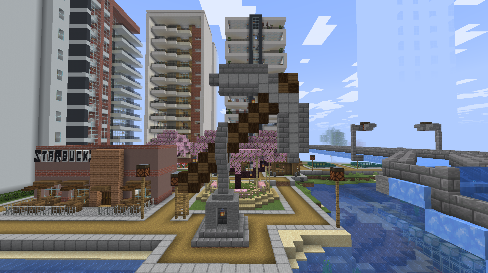
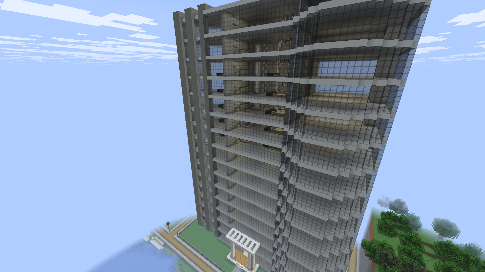
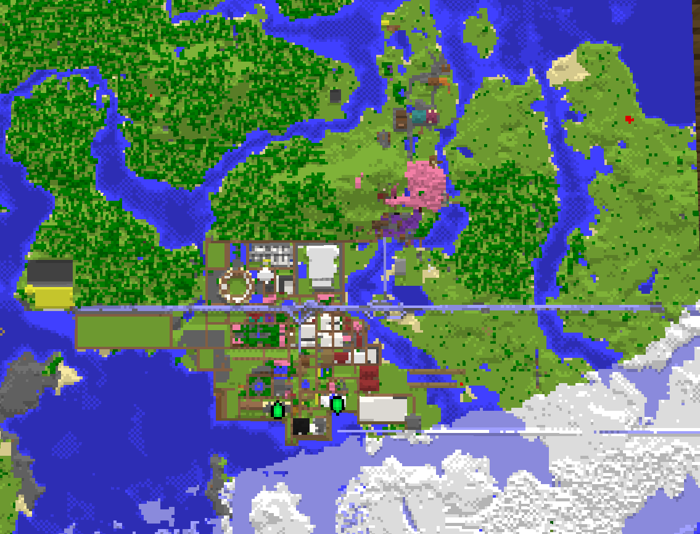
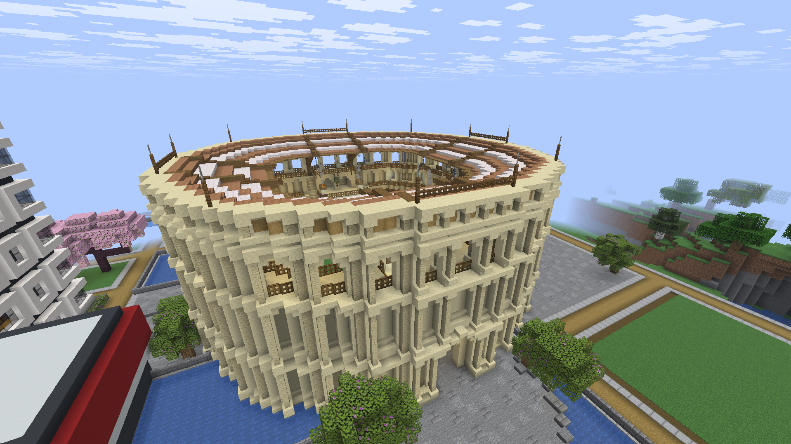
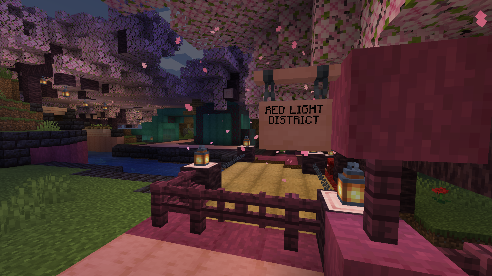

A nation built block by block — where the medieval heart of Neoveil Jade City beats beneath a skyline of glass, rail, and ambition.
"A living capital where the modern city rises above ancient medieval roots — its streets, towers, and alleys all shaped by the hands and lives of its people."
NJC is the seat of the USSF — named for its founders, Nithil and Jenny, and built where a fortified medieval town grew into a modern metropolis without ever losing its old stones.
Neo — the new. Veil — the history beneath it. Jade — precious, ancient, enduring. City — alive with its people.
Downtown NJC rises in glass and steel: more than ten apartment towers, a four-line metro, and two skyscrapers anchoring the skyline — one of them a Shangri-La-style luxury hotel watching over the city below.
Walk further in and the centuries fall away. Middle NJC keeps its medieval face — a working clock tower marking the hour, a stone trade marketplace, a church, and the colosseum standing where it always has.



USSF stretches from the capital's port to frozen northern coasts and sun-bleached southern cliffs.
Seat of government, the metro network's origin point, and home to Port de Jenny, the Colosseum, and the iconic Clock Tower.
Modeled after Kandy — a hillside second capital, reachable by direct long-distance train or highway from NJC.
The arctic edge of USSF, linked to the capital by highway and by long-distance rail via Slut Town station.

A single artery connects the airport to the capital and out to USSF's furthest territories, splitting at the Golden Jade Veilend Bridge.
The last landmark before the highway splits — the gateway out of Neoveil's reach.
Golden — grand and iconic, in the tradition of the world's great crossings.
Jade — named for the river it spans, tying it back to the capital's own name.
Veilend — marking the edge of Neoveil Jade City's reach, where the capital's territory ends and the open highway begins.
Where Middle NJC's medieval past still stands tallest.

Set in the heart of Middle NJC alongside the Clock Tower and the old trade marketplace, the Colosseum is the clearest sign that the capital never demolished its past — it simply built a modern city around it.
It stands as NJC's most recognizable ancient silhouette, visible from the surrounding medieval quarter long before downtown's skyscrapers come into view.
Three operating lines connect every corner of NJC, with long-distance rail reaching Iceland and Santorini directly from the Main Hub.
Train 1 — Iceland Express: NJC Main Hub → Slut Town → Iceland. Slut Town station connects directly to the Monastiraki Metro stop.
Train 2 — Santorini Express: NJC Main Hub → Santorini, direct with no stops. Both long-distance services depart from the upper level of NJC Main Hub.
NJC's nightlife district — where the Red Line and Train 1 collide, and the city never quite sleeps.
Sitting at the crossing of the Red Line metro and the Iceland-bound railway, Slut Town is NJC's most talked-about district — the stop everyone recognizes immediately on the line diagram.
Between the highway running through on its way to the Golden Jade Veilend Bridge and the trains pulling in and out at all hours, it's the liveliest corner of the capital after dark.
